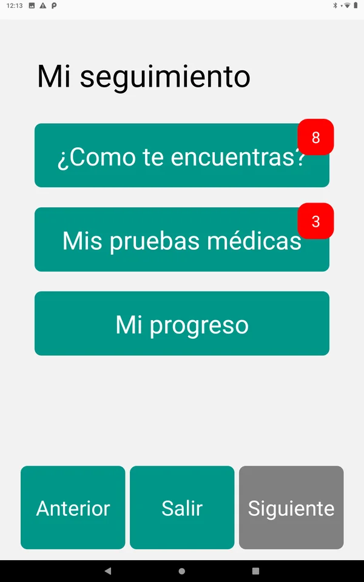

Integracam: prevención y mejora de la fragilidad en personas mayores
Junto al equipo de Atos, adaptamos una plataforma de prevención y mejora de la fragilidad para su uso en hospitales como La Paz, 12 de Octubre y el Hospital Universitario de Getafe, con una interfaz para profesionales y otra para la persona mayor.
Hablemos de tu proyectoDe un vistazo
- Antes
Una plataforma de fragilidad sin adaptar a hospitales
Existía una plataforma de prevención y mejora de la fragilidad en personas mayores que se quería llevar a hospitales como La Paz, 12 de Octubre y Getafe.
- Ahora
Dos interfaces y una app conectada a dispositivos
Una interfaz para profesionales y otra para la persona mayor, con una aplicación conectada por Bluetooth a un nodo IoT y a dispositivos de biomarcadores.
- Resultado
- Para hospitalesLa Paz, 12 de Octubre y Hospital Universitario de Getafe
- 2 interfacesprofesionales y persona mayor
- IoT y biomarcadoresconexión Bluetooth con dispositivos
Contexto
Integracam es una plataforma de prevención y mejora de la fragilidad en personas mayores. El objetivo era adaptarla para su uso en hospitales como La Paz, 12 de Octubre y el Hospital Universitario de Getafe.
Atos nos subcontrató para cubrir estas áreas, trabajando en coordinación con su equipo:
- Ingeniería
- Rigor científico
- Usabilidad y accesibilidad
- Desarrollo móvil
- Desarrollo web
Problema
Llevar una plataforma de fragilidad a un hospital exige dar respuesta a dos perfiles muy distintos: los profesionales sanitarios, que necesitan gestionar y consultar la información de cada persona, y las personas mayores, que deben usarla por sí mismas.
Además, la plataforma tenía que conectarse con dispositivos que miden biomarcadores, y hacerlo de forma sencilla para quien no tiene experiencia con tecnología.
Solución
Adaptamos la plataforma para su uso hospitalario, coordinados con el equipo de Atos. El resultado se compone de:
- Una interfaz para profesionales.
- Una interfaz para la persona mayor.
- Una aplicación conectada por Bluetooth a un nodo IoT y a dispositivos de biomarcadores.
Es el tipo de trabajo que hacemos en interfaces para mayores, software a medida e IoT y hardware.



Resultados
La plataforma cuenta con una interfaz para cada perfil, la de profesionales y la de la persona mayor, y con una aplicación que se conecta por Bluetooth a los dispositivos de medida de biomarcadores.
Está pensada para el entorno hospitalario, en hospitales como La Paz, 12 de Octubre y el Hospital Universitario de Getafe.
Integracam en vídeo
Otros casos de éxito
Empieza por una conversación de treinta minutos
Cuéntanos qué necesitas y te decimos honestamente si podemos ayudarte.